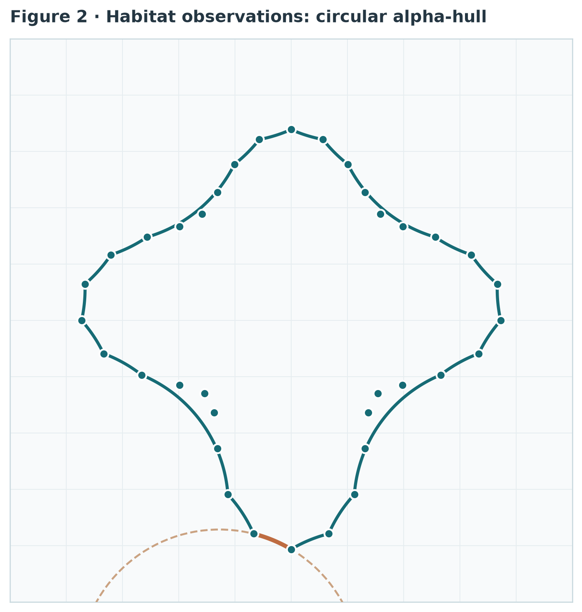
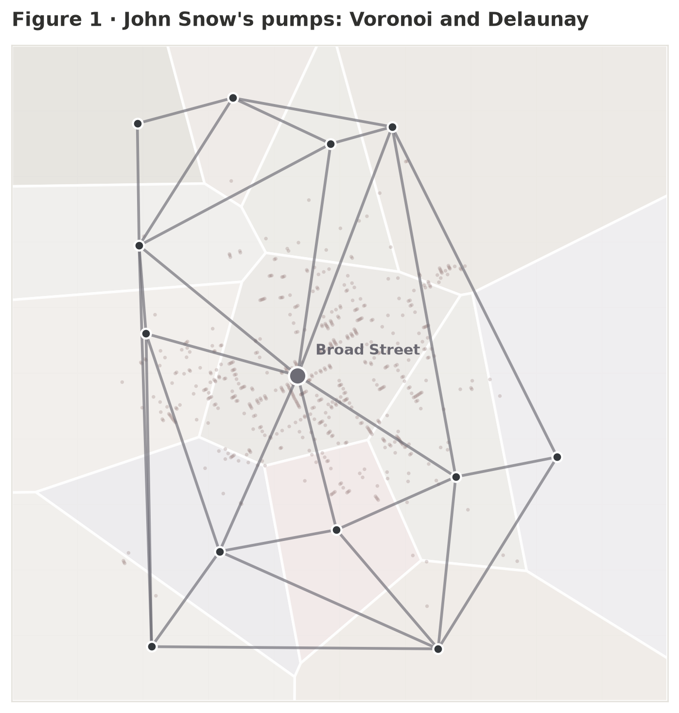
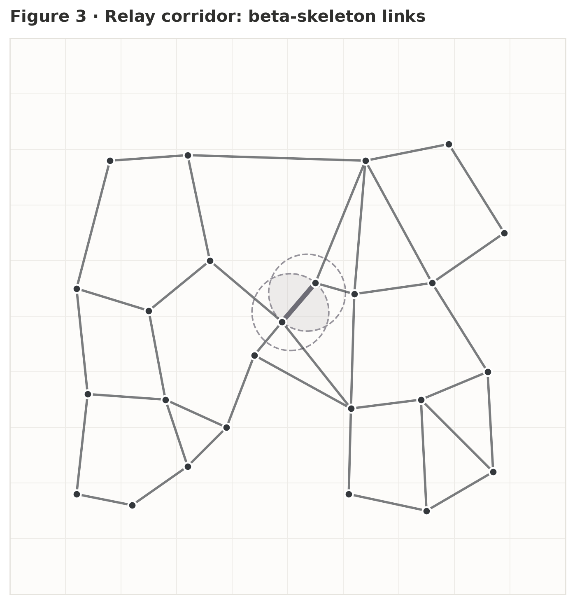
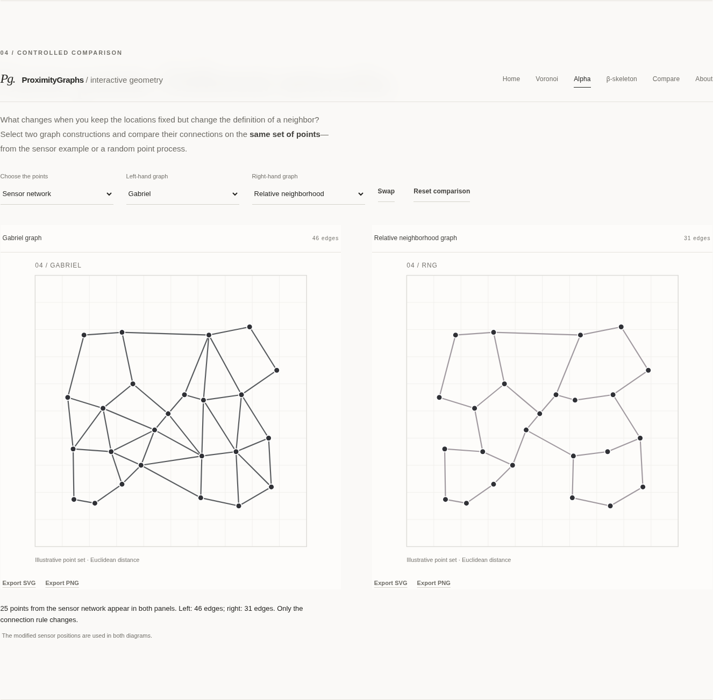

A FIELD GUIDE TO COMPUTATIONAL GEOMETRY NO. 01
Who counts as a neighbor?
A collection of points does not determine a single network. The rule for connecting them does. Explore how distance, empty regions, and scale shape the patterns we see.
Install: pip install proximitygraphsOpen-source computational geometry
Preparing the interactive figures…

FIG. 02 SHAPE FROM POINTSThe geometry of connection.
Begin with historical water-pump locations, reconstruct shapes, test sensor links, and compare networks on shared point sets. Each example lets you explore the rule behind the result.

Voronoi & Delaunay Discover how nearby locations divide a map into regions. Alpha-Hull & Alpha-Shape See how straight and circular boundaries recover a shape from points.
β-Skeleton Discover why nearby sensors connect—or fail the empty-region test.
Competing graph rules Compare different definitions of neighbors on identical sites.Voronoi & Delaunay
In 1854, John Snow mapped water pumps and cholera deaths in London’s Soho district. Use the pump locations to explore how a Voronoi diagram divides space by proximity, and how Delaunay edges connect neighboring sites.
Loading points…
The pump locations and cholera death marks come from digitized historical map records. The Voronoi regions are a modern mathematical overlay, not part of Snow’s original analysis. They measure straight-line proximity, not actual walking routes, water use, or disease transmission.
Alpha-Hull & Alpha-Shape
How does a cloud of points become a recognizable shape? Compare the straight boundary of an alpha-shape with the circular arcs of an alpha-hull. Change the points and the scale to see gaps, contours, and holes emerge.
Loading points…
A triangle passes the construction test when its circumradius is at most R = 1 / |α|. The threshold can join regions, separate them, or reveal holes. To see how sampling affects those features, compare a binomial process with a fixed number of sites against a Poisson process whose number of sites varies randomly.
β-Skeleton
Imagine two groups of sensors joined by a chain of relays. A β-skeleton connects two sites only when their shared, lens-shaped region contains no other site. Select a pair to see why a connection is accepted or rejected.
Loading points…
These links describe geometric proximity, not wireless connectivity. Signal strength, obstacles, and routing require separate models.
Same points. Different networks.
What changes when you keep the locations fixed but change the definition of a neighbor? Select two graph constructions and compare their connections on the same set of points—from the sensor example or a random point process.
Points are placed independently across the square.
Points in this sample: 25
The same points produce different connections under different rules.
Both panels use the same locations, making the effect of each connection rule easy to compare.
The ideas behind the diagrams
The reference examples use the open-source ProximityGraphs library. When you change the points, the geometry is recalculated in your browser. Each figure makes the underlying distance and empty-region rules visible.
The Soho pump and cholera locations come from historical map records; the letterform, face, sensor network, and random point processes are illustrative. All diagrams use straight-line distance in the plane. They help explain geometric principles, not real-world travel, communication performance, or causation.